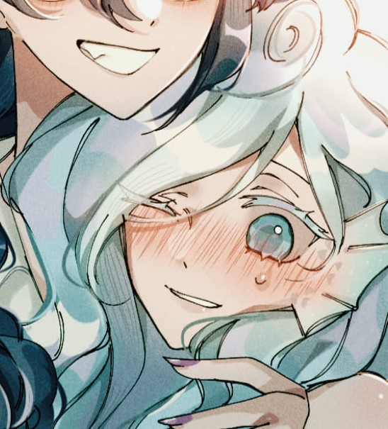
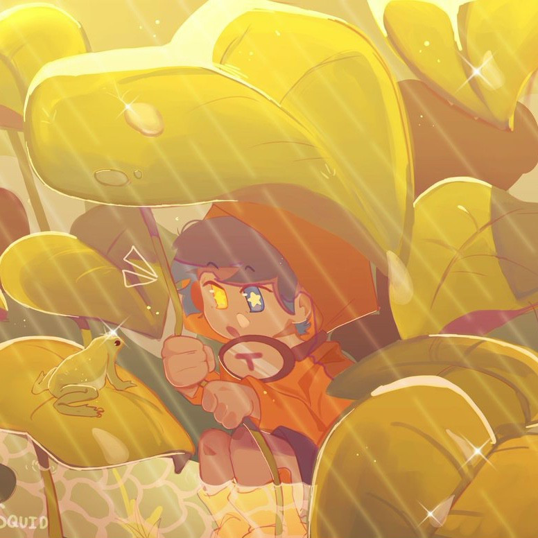

[ ABOUT ME (●'◡'●) ]
NGUYEN LE TU ANH
¯\_(ツ)_/¯
Hãy nghĩ về cuộc đời
Khi tôi không còn nữa
Sẽ lấy được những gì
Về bên kia thế giới
Ngoài trống vắng mà thôi.
-Phyllocactus-Đồng Vọng Dân Gian-
____________________

_Personal in4mation_
NAME? ---> NGUYEN LE TU ANH (vì 1 số lý do nên cứ gọi là Cá cho nó gọn:)))
FAVOURITE COLORS (Màu sắc ưa thích)? ---> Light blue; Cream; Pastel purple
ZODIAC SIGN (Cung hoàng đạo)? ---> Pices (Song Ngư)
REASON I'M HERE (Lý do tôi ở đây)?
---> Không biết nữa, chắc là do chán thôi
-Liên hệ-
SĐT: 0946669689_____Email: ChidoKatori230209@gmail.com

*Lời tác giả:
-Là con người bình thường trong một thế giới bình thường
-Thích ngủ, vẽ tranh các kiểu,…
-Đồng thời cũng thích tìm hiểu về những thứ khá dị (vd như ma quỷ)
-Nơi đây chủ yếu để chia sẻ các tip vẽ cùng với xả tranh + ảnh và những câu chuyện thường ngày tìm được
trên internet cùng với của coan
tác giả này, còn lại là memes lụm lặt được từ khắp nơi tui tìm được
(2 ảnh bên là ví dụ)
-Xàm là chính
-Lịch đăng ko cố định - Có thể là hôm sau, tuần sau, tháng sau,... ai biết được?
-Chúc mọi người 1 ngày vui vẻ-